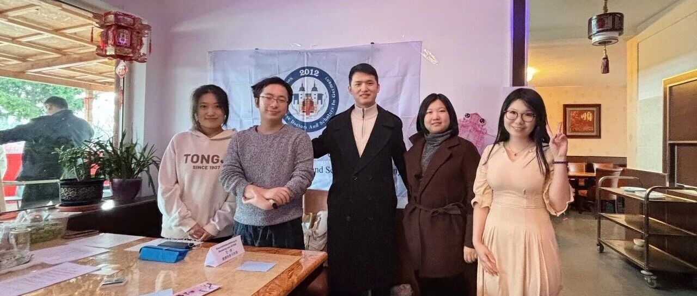
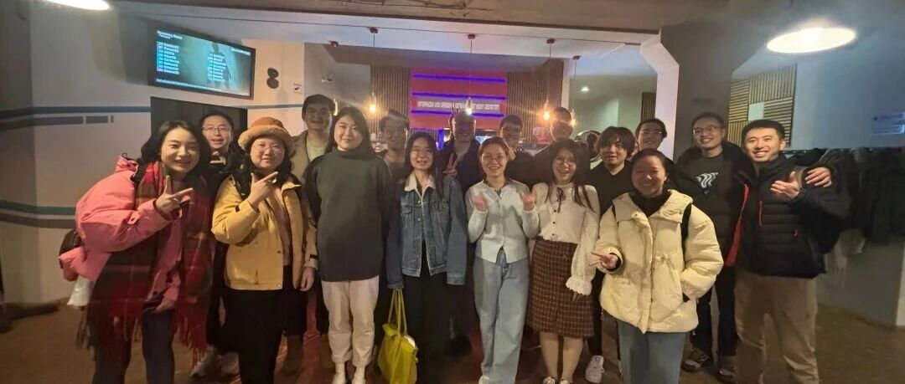
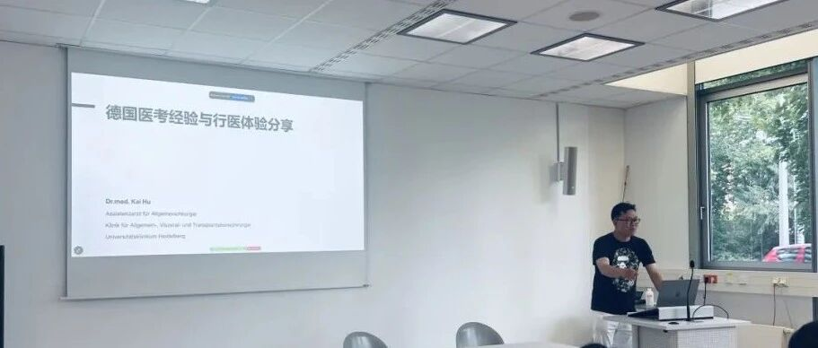

学术交流
组织中德医学、生物医药及生命科学领域的专业交流
HEIDELBERG · SINCE 2012
汇聚旅德及归国华人医师、博士后、博士研究生与科研工作者，促进医学、生物医药及生命科学领域的学术交流与专业合作。

团结互助
✦拼搏进取
✦仁爱至善
✦中德合作
2026 年度重点学术项目
论坛将于 2026 年 11 月 14 日在德国海德堡举行，面向青年医师及生命科学研究者，设置主旨报告、青年学者报告、壁报展示与专家评议。
01 · 协会概况

旅德华人医师学者协会（SCDSG）是以学术交流为核心的非营利组织，前身为 2012 年成立的“海德堡龙一族”。
组织中德医学、生物医药及生命科学领域的专业交流
促进医学科学知识与专业实践经验共享
支持跨机构、跨学科研究合作与转化创新
支持青年医师与科研工作者的学术及职业发展
协会成员
学术交流活动总计
人才发展与招聘活动
持续拓展专业网络
协会发展历程
通过建立医学专业交流群，协会早期的同行互助网络逐步形成。
会员课题交流机制逐步建立并持续完善。
协会完成组织架构建设，并正式设立秘书处及会徽。
协会进一步完善学术论坛、公共传播及会员活动体系。
协会组织会员开展募捐及医疗物资采购，以专业行动支援武汉。
协会有序重启学术讲座、人才交流及国内论坛等核心活动。
协会已初步构建涵盖学术交流、人才发展及国际合作的常态化工作体系。
02 · 学术与会员活动
协会定期举办学术论坛、专题讲座、职业发展交流及会员活动。
查看活动详情 ↗

查看活动详情 ↗

查看活动详情 ↗

查看活动详情 ↗

查看活动详情 ↗

查看活动详情 ↗

查看活动详情 ↗

查看活动详情 ↗

查看活动详情 ↗

查看活动详情 ↗

查看活动详情 ↗

查看活动详情 ↗

查看活动详情 ↗

查看活动详情 ↗

查看活动详情 ↗

查看活动详情 ↗

查看活动详情 ↗

查看活动详情 ↗

查看活动详情 ↗

查看活动详情 ↗

查看活动详情 ↗

查看活动详情 ↗

查看活动详情 ↗

查看活动详情 ↗
03 · 中德医学与生命科学网络
协会依托会员与合作伙伴网络，促进跨地区学术交流、科研合作与人才发展。
海德堡作为协会发源地，是德国会员网络的核心节点。


国内学术论坛 · 四届
四届论坛举办城市：大连、厦门、温州、上海
申请加入协会
会员申请原则上不设专业背景及学历层级限制，申请人须提交真实的姓名、所在单位和专业方向供协会审核。
*本表格请下载后填写，然后将 Word 文档发送至下列邮箱。请认真填写以下信息，确保内容准确无误，协会将严格保密所有信息。秘书处将在审核后通过微信或邮箱通知入会结果。
scdsg.heidelberg@gmail.com
 协会公众号微信：龙一族 SCDSG
协会公众号微信：龙一族 SCDSG 小红书SCDSG
小红书SCDSG 抖音SCDSG
抖音SCDSG Instagram@scdsg.heidelberg
Instagram@scdsg.heidelberg